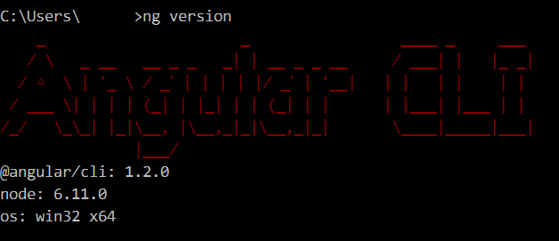
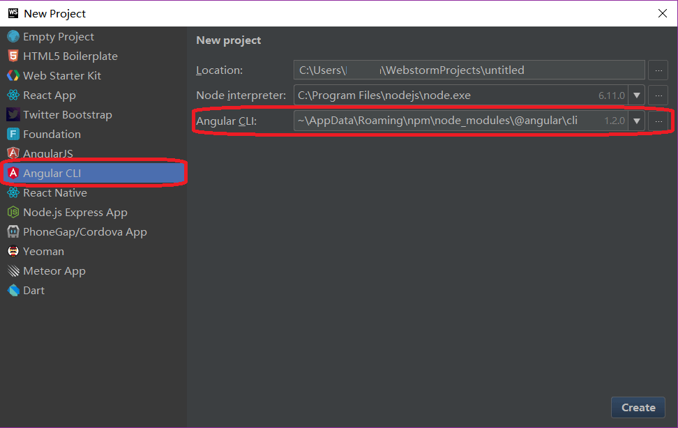
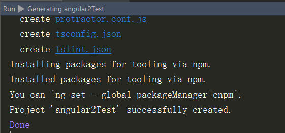
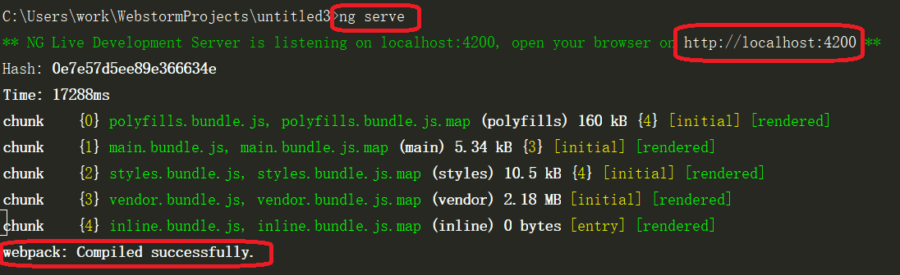
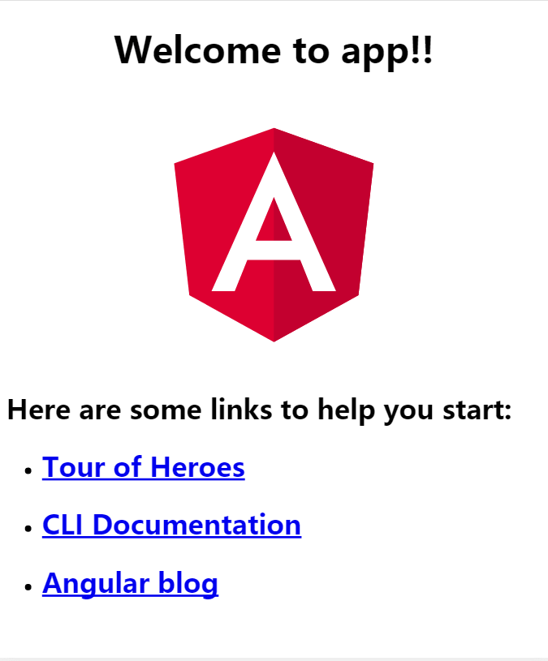
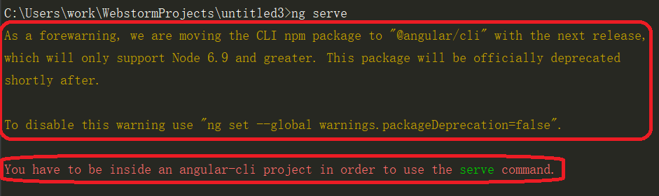
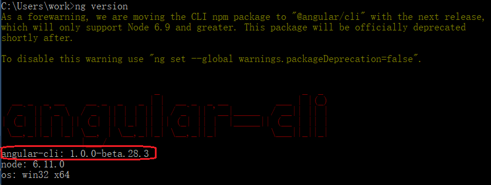

一、安装nvm-windows，方便node版本切换
1 | nvm list #查看已安装的版本 |
二、为npm配置proxy(proxy软件需自行安装)
1 | npm config set proxy=http://localhost:1080 |
三、安装@angular/cli（正式版）
1 | npm install -g @angular/cli |
安装完后，查看ng版本（如下图）1
ng version

四、使用webstorm创建Angular 2项目
1.打开webstorm，选择”create new project”
2.选择Angular CLI，此时会自动侦测并配置刚才安装好的Angular CLI（如下图）

3.点右下角“create”，创建project
4.当Run窗格中出现“Installing packages for tooling via npm ”字样时，需稍等片刻，之后即可successfully created（如下图）

五、启动项目
terminal中输入
1
ng serve
出现编译成功信息（如下图）

浏览器地址栏输入：localhost:4200，显示如下图即OK

遇到的问题
1.“You have to be inside an angular-cli project in order to use the serve command”
@angular/cli正式版安装后，依然在使用beta版，故报错（如下图）

查看版本，的确是beta版（如下图）

参考官方升级文档，需卸载之前beta版1
2
3nvm use 5.12.0 #切换node版本
npm uninstall -g angular-cli # Remove global package
npm uninstall --save-dev angular-cli # Remove from package.json